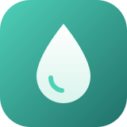

Seguimiento diario
Registra tu consumo de agua en un toque y consulta tu progreso del día.

PROYECTO PERSONAL · 2026
Una app Android para convertir la hidratación en un hábito sencillo.
EL PUNTO DE PARTIDA
Beber suficiente agua es sencillo en teoría y fácil de olvidar en la práctica. Muchas apps de recordatorios resultan ruidosas o demasiado complejas. AquaReminder busca lo contrario: una experiencia tranquila que te acompañe sin molestar.
QUÉ OFRECE
Registra tu consumo de agua en un toque y consulta tu progreso del día.
Avisos a lo largo del día para que no se te olvide beber.
Una interfaz limpia, pensada para usarse en pocos segundos.
CÓMO ESTÁ HECHA
Construida con Kotlin y Jetpack Compose, usa Room para guardar los datos en el dispositivo y sigue una arquitectura limpia para poder evolucionar con facilidad.
El proyecto está en desarrollo. Pronto añadiré capturas y más detalles técnicos.
¿TE INTERESA?
Si quieres saber más sobre el proyecto o cómo lo estoy construyendo, escríbeme.
Escríbeme